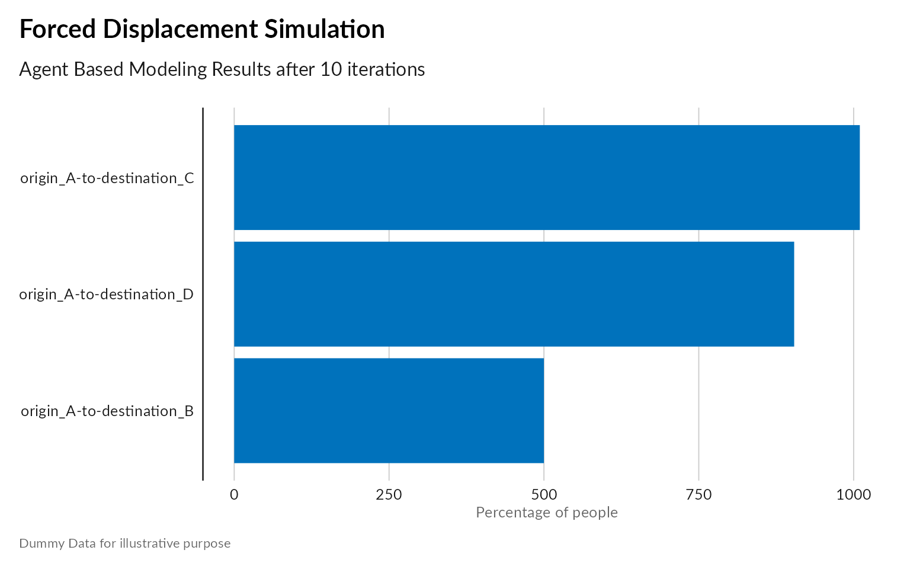
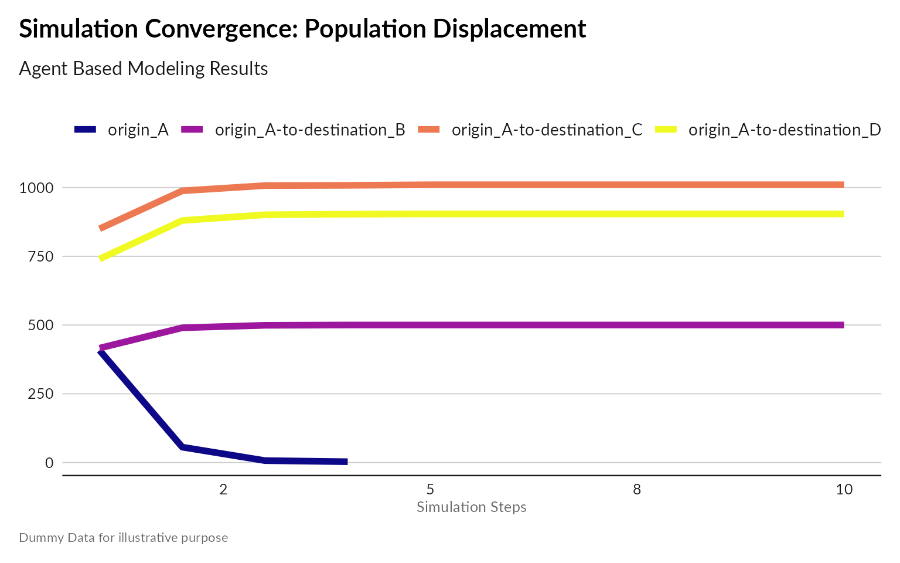

Agent-Based Modeling (ABM) is a powerful simulation technique used to understand and predict complex behaviors and interactions within systems. In ABM:
Agent are individual people, each with motivations and resources.
Agent evolve within an environment (multiple countries), each being characterized by different conditions
Agent may decide to move or not based on factors like safety and opportunity, that reflects the conditions of the different countries.
When agent move, the conditions of the countries can be affected
By letting agent interact within a virtual environment, movement patterns can be predicted in order to design better interventions
In the context of forced displacement, ABM can help us explore how individuals and groups make migration decisions based on various factors. This tutorial will guide you through the fundamental components needed to define an ABM simulation for forced displacement scenarios.
Agents represent individuals or entities that interact with their environment and each other. In our displacement model, agents are displaced persons whose behaviors are influenced by:
The rules of behavior define how agents make decisions and behave. Each agent’s migration decision will depend on:
The environment is the context in which agents operate. It includes:
Simulations run in loops or iterations, allowing agents to repeatedly act or interact over time, reflecting the ongoing nature of displacement scenarios.
ABM can help answer critical questions such as:
Migration Destinations: Where are displaced populations most likely to migrate?
Influence of Push and Pull Factors: How do safety, resources, and social networks influence migration decisions?
Impact on Destinations: How will incoming populations affect resources and infrastructure in destination areas?
Impact on Origins: How will displacement impact the social and economic dynamics of the origin location?
There are therefore numerous added value of such modeling excercise compared to a simple predictive model:
Individual-Level Decisions: ABM captures the diversity and complexity of individual migration choices.
Emergent Outcomes: Observing system-level consequences of individual actions, identifying potential bottlenecks and unforeseen impacts.
Spatial Dynamics: Realistic representation of movement through space, considering geographical factors and travel costs.
Imagine a political shock event disrupts Country A, causing some of its citizens to consider migrating to neighboring Countries B, C, and D. A simplified model can be build to simulate agents (individuals) deciding whether to move out of their origin country based on a combination of factors like:
To implement a simulation within such scenario, some data will be required:
Static Attributes: Age, gender, health status, skills, family size, risk tolerance.
Dynamic Attributes: Current location, satisfaction with current location, remaining resources.
Environment: Includes origin and potential destination locations with attributes like:
The goal is to calculate the number of agents remaining in the origin country (A) and those who migrated to countries B, C, and D under a series of assumptions both for the people and the environment (aka countries characteristics). Country characteristics can be measured by indexes measuring for instance Safety, Resources, Opportunities, existence of Citizen network from Country A and available Support Interventions (for instance “Resource Distribution” like Cash allowance, “Public services” like free access to School and Education or “Legal Documentation” to access formal labor employment)
To proceed, one needs to iterate over 5 steps:
We can do this with a few R libraries.
Agents representing citizens of Country A that have specific attributes.
Citizens in country A with for instance the following agent
characteristics:
- age: Random between 20 and 65. - health:
Random value from a normal distribution. - skills: “Low”,
“Medium”, or “High” (categorical). - family: True if the
agent has family (binary). - risk_tolerance: Random value
between 0 and 1 (uniform distribution). - social_network:
Boolean vector indicating connections only within country A (if family
is present).
# A class that extends the villager agent class to have skills, risk tolerance, and country history
person <- R6::R6Class("agent",
inherit = villager::agent,
public = list(
age = NULL,
alive = NULL,
children = NULL,
father_id = NULL,
first_name = NULL,
gender = NULL,
health = NULL,
identifier = NULL,
last_name = NULL,
mother_id = NULL,
partner = NULL,
profession = NULL,
skills = NULL,
risk_tolerance = NULL,
country_history = NULL,
initialize = function(identifier = NA,
first_name = NA,
last_name = NA,
age = 0,
mother_id = NA,
father_id = NA,
partner = NA,
children = vector(mode = "character"),
gender = NA,
profession = NA,
alive = TRUE,
health = 100,
skills = NA,
risk_tolerance = NA,
country_history = NA) {
# Call the base class with the standard values
super$initialize(identifier,
first_name,
last_name,
age,
mother_id,
father_id,
partner,
children,
gender,
profession,
alive,
health)
# Set the extended class properties
self$skills <- skills
self$risk_tolerance <- risk_tolerance
self$country_history <- country_history
},
as_table = function() {
agent_table <- data.frame(
age = self$age,
alive = self$alive,
father_id = self$father_id,
first_name = self$first_name,
gender = self$gender,
health = self$health,
identifier = self$identifier,
last_name = self$last_name,
mother_id = self$mother_id,
partner = self$partner,
profession = self$profession,
skills = self$skills,
risk_tolerance = self$risk_tolerance,
country_history = paste(self$country_history, collapse = "-to-")
)
return(agent_table)
}
)
)Set up the environment with Country of origin A and destination
countries (destination_B, destination_C,
destination_D), aka the initial condition. Then a synthetic
Population is generated with 2000 agents for the conflict country
(origin_A) with the attributes defined above.
initial_condition <- function(current_state,
model_data,
agent_mgr,
resource_mgr) {
# Create a normal distribution for health, centered around 80 (1 (nearly dead) to 100 (very healthy))
health_norm <- rnorm(2000, mean=80 , sd=5)
# Create a normal distribution for risk tolerance, centered around 60 (1 (tolerate risk) to 100 (do not support insecurity))
risk_norm <- rnorm(2000, mean = 60, sd=15)
# Create 2,000 people
for(i in 1:2000) {
# Assume two genders (female/male)
gender = 'female'
# Every even number we assign a male, getting a 50/50 gender split
if((i %% 2) == 0) {
gender = 'male'
}
# Get a number from the distribution and bound the value between 0 and 1
# Bug: The distribution is picking values exclusively less than 0 and greater than 1
# This is leading to the population having either 0 or 1 tolerance.
risk <- round(risk_norm[i])
risk <- pmin(risk, 1)
risk <- pmax(risk, 0)
new_person <- person$new(age=round(runif(1,7300,23725)),
gender=gender,
health=health_norm[i],
risk_tolerance=risk,
country_history=c("origin_A"))
agent_mgr$add_agent(new_person)
}
# Randomly pair them, based on made up rules
for (single_person in agent_mgr$get_living_agents()) {
# Person has to be single
if(is.na(single_person$partner)) {
# Slim chance someone gets married
if (runif(1,0,10) >= 8) {
# Loop over potential mates
for (potential_mate in agent_mgr$get_living_agents()) {
if(is.na(potential_mate$partner)) {
# Make sure we aren't looking at the single_person agent
if (potential_mate$identifier != single_person$identifier) {
# Assume heterosex
if (potential_mate$gender != single_person$gender) {
# Skip checking age ranges (assume everyone is of age)
agent_mgr$connect_agents(single_person, potential_mate)
# Exit inner loop and return to outer
break
}
}
}
}
}
}
}
# Add a random number of children to married couples. This will allow for the
# idea of family members residing in other countries
for (potential_parent_person in agent_mgr$get_living_agents()) {
# Make sure they're married and no older than... 55?
if(!is.na(potential_parent_person$partner) && potential_parent_person$age < 20075) {
# Some small chance they have kids
if (runif(1,0,10) >= 8) {
# Add three kids
for(i in 1:3) {
risk <- round(risk_norm[i])
risk <- pmin(risk, 1)
risk <- pmax(risk, 0)
new_child <- person$new(age=8030, health = health_norm[i], risk_tolerance = risk, country_history = c("origin_A"))
agent_mgr$add_agent(new_child)
potential_parent_person$add_child(new_child)
# Get the partner
partner <- agent_mgr$get_agent(potential_parent_person$partner)
partner$add_child(new_child)
# Add the parents to the child, figure out which is the mom and dad
if (potential_parent_person$gender == 'male') {
new_child$father_id <- potential_parent_person$identifier
new_child$mother_id <- partner$identifier
}
if (potential_parent_person$gender == 'female') {
new_child$mother_id <- potential_parent_person$identifier
new_child$father_id <- partner$identifier
}
}
}
}
}
}A score for each destination country based on safety, resources, affordability (based on skills), potential social network connection in the destination (if applicable), and opportunity for support, etc.
The agent calculate the attractiveness for each country based then relates it to his own migration propensity and if the threshold is reached, chooses the country with the highest score to migrate to.
model_forced_displacement <- function(current_state,
previous_state,
model_data,
agent_mgr,
resource_mgr) {
print(paste("Step:", current_state$step))
origin_A_properties = list(
living_conditions = 2,
safety = 2 ,
access_to_healthcare = 2,
access_to_education = 2,
access_to_work = 1,
access_to_cash_allowance = 1,
network = 8 )
destination_B_properties = list(
living_conditions = 7,
safety = 6,
access_to_healthcare = 7,
access_to_education = 7,
access_to_work = 3,
access_to_cash_allowance = 1,
network = 4 )
destination_C_properties = list(
living_conditions = 3,
safety = 2,
access_to_healthcare = 2,
access_to_education = 2,
access_to_work = 1,
access_to_cash_allowance = 1,
network = 2 )
destination_D_properties = list(
living_conditions = 4,
safety = 4,
access_to_healthcare = 4,
access_to_education = 5,
access_to_work = 3,
access_to_cash_allowance = 3,
network = 1 )
# Decide whether the person moves from one country to the next
for (agent in agent_mgr$get_living_agents()) {
# Age them by a day
agent$age <- agent$age+1
# Get the most recent country history (where they currently are)
if (agent$country_history[length(agent$country_history)] == 'origin_A') {
where_to_move <- round(runif(1,1,4))
if (where_to_move == 1) {
agent$country_history <- append(agent$country_history, "destination_B")
}
if (where_to_move == 2) {
agent$country_history <- append(agent$country_history, "destination_C")
}
if (where_to_move == 3) {
agent$country_history <- append(agent$country_history, "destination_D")
}
if (where_to_move == 4) {
# Stay in origin_A
}
}
}
}Using those assumptions, simulation can be performed a certain number of times. In each iteration, each agent goes through the decision-making process and potentially updates their location. After each iteration, we can calculate the final population distribution across destination countries.
country_a <- villager::village$new("Displacement_Model",
initial_condition,
model_forced_displacement,
person)
simulation_iterations <- 10
simulator <- villager::simulation$new(simulation_iterations ,
list(country_a))
simulator$run_model()
#> [1] "Step: 1"
#> [1] "Step: 2"
#> [1] "Step: 3"
#> [1] "Step: 4"
#> [1] "Step: 5"
#> [1] "Step: 6"
#> [1] "Step: 7"
#> [1] "Step: 8"
#> [1] "Step: 9"
#> [1] "Step: 10"Note that this example is designed as a template that can be easily modified to incorporate additional factors like travel cost, language barriers, or policy changes in destination countries.
# Load in data that got save automatically
agent_data <- readr::read_csv("results/Displacement_Model/agents.csv")
ressource_data <- readr::read_csv("results/Displacement_Model/resources.csv")
#brks <- c(0, 0.25, 0.5, 0.75, 1)
# Filter the results down to just the last day
ggplot(agent_data |>
dplyr::filter( step == simulation_iterations)) +
aes(x = forcats::fct_rev(forcats::fct_infreq(country_history)) ) +
geom_bar(fill = "#0072BC") +
# scale_y_continuous(breaks = brks, labels = scales::percent(brks)) +
coord_flip() +
labs(
title = "Forced Displacement Simulation",
subtitle = paste0("Agent Based Modeling Results after ", simulation_iterations, " iterations"),
caption = "Dummy Data for illustrative purpose",
y = "Percentage of people" ) +
unhcrthemes::theme_unhcr(grid = "X", axis = "Y", axis_title = "X")
# Filter the results down to just the last day
ggplot(agent_data |>
dplyr::group_by(country_history, step) |>
dplyr::summarise ( n = dplyr::n())) +
aes(x = step , y = n, group = country_history, color = country_history) +
geom_line( size=2 ) +
scale_colour_viridis_d("Displacement", option = "plasma") +
scale_x_continuous( labels = scales::label_number(accuracy =1, scale_cut = scales::cut_short_scale())) +
labs(
title = "Simulation Convergence: Population Displacement",
subtitle = paste0("Agent Based Modeling Results"),
caption = "Dummy Data for illustrative purpose",
x = "Simulation Steps" ) +
unhcrthemes::theme_unhcr(grid = "Y", axis = "X", axis_title = "X")
Validation is crucial to ensure the credibility and reliability of an Agent-Based Model (ABM) for forced displacement. This process involves comparing the model’s outputs with real-world data and expert assessments to confirm its accuracy and realism.
Example: If the model predicts that 30% of displaced individuals are children, this percentage should align with data from similar past displacement events.
Example: If a humanitarian report indicates that access to education was a critical issue during a displacement event, the model should similarly reflect resource depletion in areas with high concentrations of displaced individuals.
Example: Studies showing that individuals prefer migrating to areas with existing social networks can be used to verify that the model accurately simulates this behavior.
Example: If historical data show that most displaced persons from Country A moved to the nearest Country B, the model should produce similar migration patterns under equivalent conditions.
Example: Experts might assess whether the model’s depiction of migration decision-making under different levels of threat is realistic.
Example: By altering parameters such as safety perception or resource availability, analysts can determine if the model consistently predicts higher migration rates when safety decreases or resources become scarce.
Using ABM in Migration and Forced Displacement Studies is not new. The literature review below is not exhaustive but can provide a first good overview:
Decision-Making in Agent-Based Models of Migration: State of the Art and Challenges
Principles and State of the Art of Agent-Based Migration Modelling
Agent-based modeling for migration and modern slavery research: a systematic review
A generalized simulation development approach for predicting refugee destinations
Agent-based models to inform economic policies on migration (ABM2Policy)
On Syria:
Prediction of Migration Paths Using Agent-Based Simulation Modeling: The Case of Syria
An Agent-Based Model to Identify Migration Pathways of Refugees: The Case of Syria
The Mobility of Displaced Syrians - An Economic and Social Analysis
On Ukraine:
An agent-based framework to study forced migration: A case study of Ukraine
Network Agency: An Agent-based Model of Forced Migration from Ukraine
On Democratic Republic of Congo: